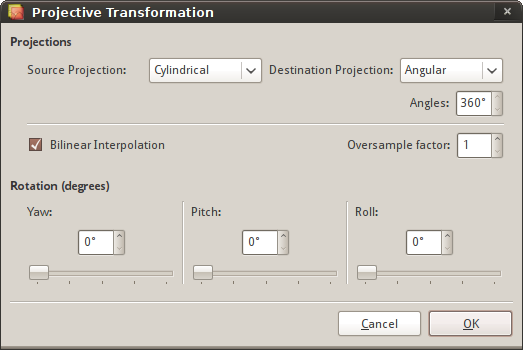

You can access this feature via the Image > Projective Transformation... menu item.
With this tool the user is able to apply projective transformations to an HDR image. This is useful if you shoot mirrorball Hdrs and you want to unwrap them, for example.
The Angular projection accepts an Angle parameter which defines how many degrees from the viewing direction the projection should cover.
